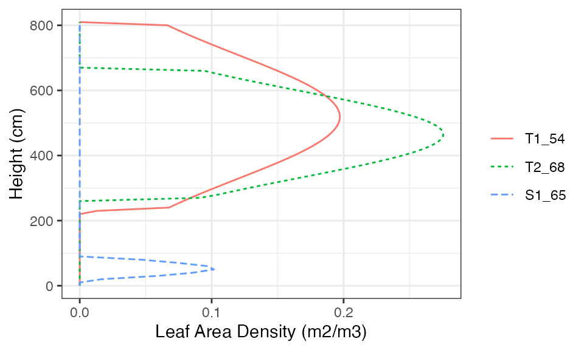
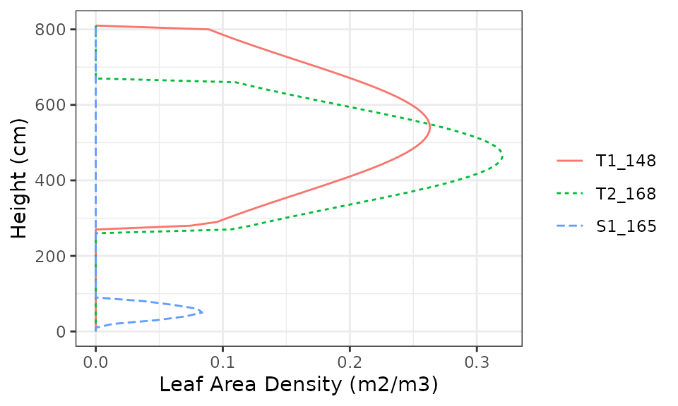
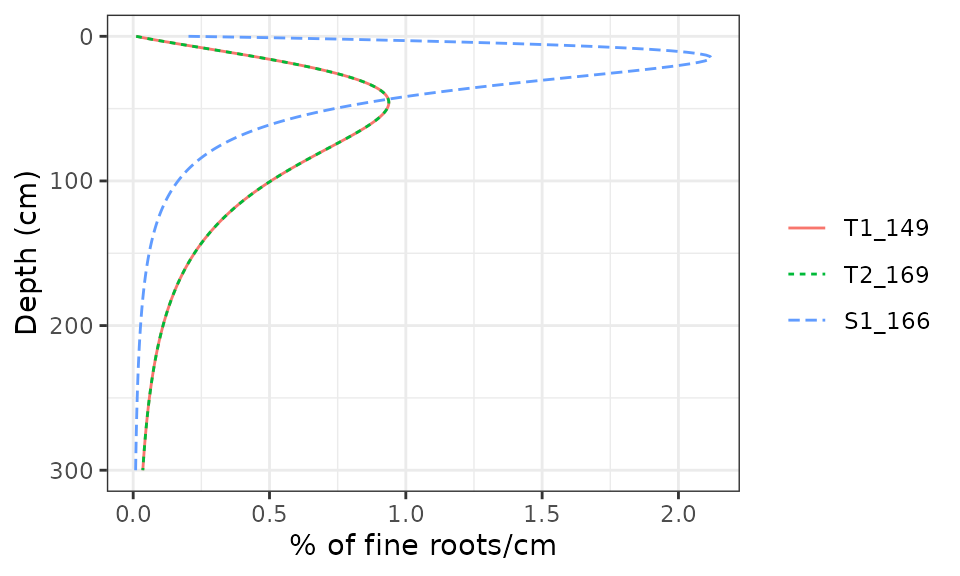

Preparing inputs
Miquel De Caceres
2021-07-14
Source:vignettes/PreparingInputs.Rmd
PreparingInputs.RmdAbout this vignette
Any process-based model of forest functioning and dynamics needs information on climate, vegetation and soils of the forest stand to be simulated. Moreover, since medfate allows simulating cohorts belonging to different species, species-specific parameters are also needed. This vignette explains data structures required as input to run simulations using the package.
Package medfateutils provides functions for creating suitable inputs for simulations with medfate.
Species-specific parameters
Simulation models in medfate require a data frame with species parameter values. The package provides a default data set of parameter values for a set of Mediterranean species. The set of species are reported in the Spanish National Forest Inventory. Hence they represent woody taxa found in Spain, but may not be sufficient for other areas. The values of the parameter table were obtained from global trait data bases, bibliographic searches, fit to empirical data or expert-based guesses:
data("SpParamsMED")A large number of parameters (columns) can be found in SpParamsMED:
names(SpParamsMED)## [1] "Name" "IFNcodes" "SpIndex"
## [4] "Genus" "Order" "Family"
## [7] "Group" "GrowthForm" "LifeForm"
## [10] "LeafShape" "LeafSize" "PhenologyType"
## [13] "Hmed" "Hmax" "Z50"
## [16] "Z95" "fHDmin" "fHDmax"
## [19] "a_ash" "b_ash" "a_bsh"
## [22] "b_bsh" "a_btsh" "b_btsh"
## [25] "cr" "a_fbt" "b_fbt"
## [28] "c_fbt" "d_fbt" "a_cr"
## [31] "b_1cr" "b_2cr" "b_3cr"
## [34] "c_1cr" "c_2cr" "a_cw"
## [37] "b_cw" "LeafDuration" "t0gdd"
## [40] "Sgdd" "Tbgdd" "Ssen"
## [43] "Phsen" "Tbsen" "xsen"
## [46] "ysen" "SLA" "LeafDensity"
## [49] "WoodDensity" "FineRootDensity" "conduit2sapwood"
## [52] "r635" "pDead" "Al2As"
## [55] "LeafWidth" "SRL" "RLD"
## [58] "maxFMC" "minFMC" "LeafPI0"
## [61] "LeafEPS" "LeafAF" "StemPI0"
## [64] "StemEPS" "StemAF" "SAV"
## [67] "HeatContent" "LigninPercent" "gammaSWR"
## [70] "alphaSWR" "kPAR" "g"
## [73] "Tmax_LAI" "Tmax_LAIsq" "Psi_Extract"
## [76] "Psi_Critic" "WUE" "pRootDisc"
## [79] "Gswmin" "Gswmax" "VCleaf_kmax"
## [82] "VCleaf_c" "VCleaf_d" "Kmax_stemxylem"
## [85] "VCstem_c" "VCstem_d" "Kmax_rootxylem"
## [88] "VCroot_c" "VCroot_d" "Narea"
## [91] "Vmax298" "Jmax298" "WoodC"
## [94] "RERleaf" "RERsapwood" "RERfineroot"
## [97] "RGRleafmax" "RGRsapwoodmax" "RGRfinerootmax"
## [100] "SeedProductionHeight" "RecrTreeDBH" "RecrTreeHeight"
## [103] "RecrShrubHeight" "RecrTreeDensity" "RecrShrubCover"
## [106] "RecrZ50" "RecrZ95" "MinTempRecr"
## [109] "MinMoistureRecr" "MinFPARRecr"Not all parameters are needed for all models. The user can find parameter definitions in SpParamsDefinition:
| ParameterName | Definition | Type | Units |
|---|---|---|---|
| Name | Taxon names (species binomials or genus) | String | NA |
| IFNcodes | Codes in the forest inventory, separated by ‘/’ | String | NA |
| SpIndex | Species index 0,1,2,… | Integer | NA |
| Genus | Taxonomic genus | String | NA |
| Order | Taxonomical order | String | NA |
| Family | Taxonomical family | String | NA |
| Group | Either “Gymnosperm” or “Angiosperm” | String | NA |
| GrowthForm | Growth form: Either “Shrub”, “Tree” or “Tree/Shrub” | String | NA |
| LifeForm | Raunkiaer life form | String | NA |
| LeafShape | Broad/Needle/Linear/Scale/Spines/Succulent | String | NA |
| LeafSize | Either “Small” (< 225 mm), “Medium” (> 225 mm & < 2025 mm) or “Large” (> 2025 mm) | String | NA |
| PhenologyType | Leaf phenology type, either “oneflush-evergreen” (new leaves develop in spring-summer), “progressive-evergreen” (new leaves develop during any season), “winter-deciduous” (leaf senescence in autumn, new leaves in spring-summer) or “winter-semideciduous” (same as before, but abscission of senescent leaves occurs when new leaves are produced). | NA | Categorical |
| Hmed | Median plant height | Numeric | cm |
| Hmax | Maximum plant height | Numeric | cm |
| Z50 | Depth corresponding to 50% of fine roots | Numeric | mm |
| Z95 | Depth corresponding to 95% of fine roots | Numeric | mm |
| fHDmin | Minimum value of height-diameter ratio | Numeric | NA |
| fHDmax | Maximum value of height-diameter ratio | Numeric | NA |
| a_ash | Allometric coefficient for shrub area as function of height | Numeric | NA |
| b_ash | Allometric coefficient for shrub area as function of height | Numeric | NA |
| a_bsh | Allometric coefficient for fine fuel shrub biomass (dry weight) | Numeric | NA |
| b_bsh | Allometric coefficient for fine fuel shrub biomass (dry weight) | Numeric | NA |
| a_btsh | Allometric coefficient for total fuel shrub biomass (dry weight) | Numeric | NA |
| b_btsh | Allometric coefficient for total fuel shrub biomass (dry weight) | Numeric | NA |
| cr | Proportion of total height corresponding to the crown (i.e. Crown length divided by total height) | Numeric | [0-1] |
| a_fbt | Regression coefficient for tree foliar biomass | Numeric | NA |
| b_fbt | Regression coefficient for tree foliar biomass | Numeric | NA |
| c_fbt | Regression coefficient for tree foliar biomass | Numeric | NA |
| d_fbt | Regression coefficient for tree foliar biomass | Numeric | NA |
| a_cr | Regression coefficient for crown ratio | Numeric | NA |
| b_1cr | Regression coefficient for crown ratio | Numeric | NA |
| b_2cr | Regression coefficient for crown ratio | Numeric | NA |
| b_3cr | Regression coefficient for crown ratio | Numeric | NA |
| c_1cr | Regression coefficient for crown ratio | Numeric | NA |
| c_2cr | Regression coefficient for crown ratio | Numeric | NA |
| a_cw | Regression coefficient for crown width | Numeric | NA |
| b_cw | Regression coefficient for crown width | Numeric | NA |
| LeafDuration | Duration of leaves in year | Numeric | years |
| t0gdd | Date to start the accumulation of degree days | Numeric | days |
| Sgdd | Degree days for leaf budburst | Numeric | ºC |
| Tbgdd | Base temperature for the calculation of degree days to leaf budburst | Numeric | ºC |
| Ssen | Degree days corresponding to senescence | Numeric | ºC |
| Phsen | Photoperiod corresponding to start counting senescence | Numeric | hours |
| Tbsen | Base temperature for the calculation of degree days to senescence | Numeric | ºC |
| xsen | Discrete values, to allow for any absent/proportional/more than proportional effects of temperature on senescence | Integer | {0,1,2} |
| ysen | Discrete values, to allow for any absent/proportional/more than proportional effects of photoperiod on senescence | Integer | {0,1,2} |
| SLA | Specific leaf area (mm2/mg = m2/kg) | Numeric | m2/kg |
| LeafDensity | Density of leaf tissue (dry weight over volume) | Numeric | g/cm3 |
| WoodDensity | Wood tissue density (at 0% humidity!) | Numeric | g/cm3 |
| FineRootDensity | Density of fine root tissue (dry weight over volume). | Numeric | g/cm3 |
| conduit2sapwood | Proportion of sapwood corresponding to conducive elements (vessels or tracheids) as opposed to parenchymatic tissue. | Numeric | [0,1] |
| r635 | Ratio of foliar (photosynthetic) + small branches (<6.35 mm) dry biomass to foliar (photosynthetic) dry biomass | Numeric | >=1 |
| pDead | Proportion of total fine fuels that are dead | Numeric | [0,1] |
| Al2As | Leaf area to sapwood area ratio | Numeric | m2·m-2 |
| LeafWidth | Leaf width | Numeric | cm |
| SRL | Specific root length | Numeric | cm/g |
| RLD | Fine root length density (density of root length per soil volume) | Numeric | cm/cm3 |
| maxFMC | Maximum fuel moisture (in percent of dry weight) | Numeric | % |
| minFMC | Minimum fuel moisture (in percent of dry weight) | Numeric | % |
| LeafPI0 | Osmotic potential at full turgor of leaves | Numeric | Mpa |
| LeafEPS | Modulus of elasticity (capacity of the cell wall to resist changes in volume in response to changes in turgor) of leaves | Numeric | Mpa |
| LeafAF | Apoplastic fraction (proportion of water outside the living cells) in leaves | Numeric | % |
| StemPI0 | Osmotic potential at full turgor of symplastic xylem tissue | Numeric | Mpa |
| StemEPS | Modulus of elasticity (capacity of the cell wall to resist changes in volume in response to changes in turgor) of symplastic xylem tissue | Numeric | Mpa |
| StemAF | Apoplastic fraction (proportion of water outside the living cells) in stem xylem | Numeric | % |
| SAV | Surface-area-to-volume ratio of the small fuel (1h) fraction (leaves and branches < 6.35mm) | Numeric | m2/m3 |
| HeatContent | High fuel heat content | Numeric | kJ/kg |
| LigninPercent | Percent of lignin+cutin over dry weight in leaves | Numeric | % |
| gammaSWR | Reflectance (albedo) coefficient for SWR (gammaPAR is 0.8*gammaSWR) | Numeric | unitless |
| alphaSWR | Absorbance coefficient for SWR (alphaPAR is alphaSWR*1.35) | Numeric | unitless |
| kPAR | Light extinction coeficient for PAR (extinction coefficient for SWR is kPAR/1.35) | Numeric | unitless |
| g | Canopy water storage capacity per LAI unit | Numeric | mm/LAI |
| Tmax_LAI | Empirical coefficient relating LAI with the ratio of maximum transpiration over potential evapotranspiration. | Numeric | NA |
| Tmax_LAIsq | Empirical coefficient relating squared LAI with the ratio of maximum transpiration over potential evapotranspiration. | Numeric | NA |
| Psi_Extract | Water potential corresponding to stomatal closure (aprox.) | Numeric | Mpa |
| Psi_Critic | Water potential corresponding to 50% of stem cavitation (~ 50% PLC) | Numeric | Mpa |
| WUE | Water use efficiency (gross photosynthesis over transpiration) | Numeric | g C · mm H2O-1 |
| pRootDisc | Relative root conductance leading to hydraulic disconnection from a soil layer | Numeric | [0-1] |
| Gswmin | Minimum stomatal conductance to water vapour | Numeric | mol H2O·s-1·m-2 |
| Gswmax | Maximum stomatal conductance to water vapour | Numeric | mol H2O·s-1·m-2 |
| VCleaf_kmax | Maximum leaf hydraulic conductance | Numeric | mmol H2O·s-1·m-2·MPa-1 |
| VCleaf_c | Parameter c of the leaf vulnerability curve | Numeric | NA |
| VCleaf_d | Parameter d of the leaf vulnerability curve | Numeric | Mpa |
| Kmax_stemxylem | Maximum sapwood-specific hydraulic conductivity of stem xylem | Numeric | kg H2O·s-1·m-1·MPa-1 |
| VCstem_c | Parameter c of the stem xylem vulnerability curve | Numeric | NA |
| VCstem_d | Parameter d of the stem xylem vulnerability curve | Numeric | Mpa |
| Kmax_rootxylem | Maximum sapwood-specific hydraulic conductivity of root xylem | Numeric | kg H2O·s-1·m-1·MPa-1 |
| VCroot_c | Parameter c of the root xylem vulnerability curve | Numeric | NA |
| VCroot_d | Parameter d of the root xylem vulnerability curve | Numeric | Mpa |
| Narea | Nitrogen mass per leaf area | Numeric | g N·m-2 |
| Vmax298 | Maximum Rubisco carboxilation rate | Numeric | mmol CO2·s-1·m-2 |
| Jmax298 | Maximum rate of electron transport at 298K | Numeric | mmol electrons·s-1·m-2 |
| WoodC | Wood carbon content per dry weight | Numeric | g C / g dry |
| RERleaf | Maintenance respiration rates for leaves. | Numeric | g gluc · g dry-1 · day-1 |
| RERsapwood | Maintenance respiration rates for living cells of sapwood. | Numeric | g gluc · g dry-1 · day-1 |
| RERfineroot | Maintenance respiration rates for fine roots. | Numeric | g gluc · g dry-1 · day-1 |
| RGRleafmax | Maximum leaf relative growth rate | Numeric | m2/cm2/day |
| RGRsapwoodmax | Maximum sapwood relative growth rate (in basal area or sapwood area) | Numeric | cm2/cm2/day |
| RGRfinerootmax | Maximum fineroot relative growth rate | Numeric | g dry/g dry/day |
| SeedProductionHeight | Minimum height for seed production | Numeric | cm |
| RecrTreeDBH | Recruitment tree dbh | Numeric | cm |
| RecrTreeHeight | Recruitment tree height | Numeric | cm |
| RecrShrubHeight | Recruitment shrub height | Numeric | cm |
| RecrTreeDensity | Recruitment tree density | Numeric | ind/ha |
| RecrShrubCover | Recruitment shrub cover | Numeric | % |
| RecrZ50 | Recruitment depth corresponding to 50% of fine roots | Numeric | mm |
| RecrZ95 | Recruitment depth corresponding to 95% of fine roots | Numeric | mm |
| MinTempRecr | Minimum average temperature of the coldest month for successful recruitment | Numeric | ºC |
| MinMoistureRecr | Minimum value of the moisture index (annual precipitation over annual PET) for successful recruitment | Numeric | unitless |
| MinFPARRecr | Minimum percentage of PAR at the ground level for successful recruitment | Numeric | % |
To fully understand the role of parameters in the model, the user should read the details of model design and formulation at https://emf-creaf.github.io/medfatebook/index.html. An example of how to define and populate a species parameter table for a given region is given in article ‘Species parameterization for Spain’.
Vegetation
Forest objects
Models included in medfate were primarily designed to be ran on forest inventory plots. In this kind of data, the vegetation of a sampled area is often described by several records of woody plants (trees and shrubs) along with their size and species identity. Forest plots in medfate are assumed to be in a format that follows closely the Spanish national forest inventory. Each forest plot is represented in an object of class forest, a list that contains several elements. Among them, the most important items are two data frames, treeData (for trees) and shrubData for shrubs:
data(exampleforestMED)
exampleforestMED## $ID
## [1] "1"
##
## $patchsize
## [1] 10000
##
## $treeData
## Species N DBH Height Z50 Z95
## 1 157 168 37.55 800 750 3000
## 2 176 384 14.60 660 750 3000
##
## $shrubData
## Species Cover Height Z50 Z95
## 1 174 3.75 80 300 1500
##
## $herbCover
## [1] 10
##
## $herbHeight
## [1] 20
##
## attr(,"class")
## [1] "forest" "list"Trees are expected to be primarily described in terms of species, diameter (DBH; cm) and height (cm), whereas shrubs are described in terms of species, percent cover (%) and mean height (cm). Root distribution has to be specified for both growth forms, in terms of the depths (mm) corresponding to 50% and 95% of cumulative fine root distribution. Functions are provided to map variables in user data frames into tables treeData and shrubData (see function forest_mapWoodyTables()).
Aboveground and belowground data
We recommend users to define forest objects as starting point for simulations with medfate. However, simulation functions in medfate allow starting in a more general way using two data frames, one with aboveground information (i.e. the leave area and size of plants) and the other with belowground information (i.e. root distribution). The aboveground data frame does not distinguish between trees and shrubs. It includes, for each plant cohort to be considered in rows, its species identity, height and leaf area index (LAI). While users can build their input data themselves, we use function forest2aboveground() on the object exampleforestMED to show how should the data look like:
above = forest2aboveground(exampleforestMED, SpParamsMED)
above## SP N DBH Cover H CR LAI_live LAI_expanded LAI_dead
## T1_157 157 168.0000 37.55 NA 800 0.6605196 1.00643723 1.00643723 0
## T2_176 176 384.0000 14.60 NA 660 0.6055642 0.92661573 0.92661573 0
## S1_174 174 749.4923 NA 3.75 80 0.8032817 0.03965932 0.03965932 0Note that the call to forest2aboveground() included species parameters, because species-specific values are needed to calculate leaf area from tree diameters or shrub cover. Columns N, DBH and Cover are required for simulating growth, but not for soil water balance, which only requires columns SP, H (in cm), CR (i.e. the crown ratio), LAI_live, LAI_expanded and LAI_dead. Here plant cohorts are given unique codes that tell us whether they correspond to trees or shrubs, but the user can use other row identifiers as long as they are unique. In practice, the user only needs to worry to calculate the values for LAI_live. LAI_live and LAI_expanded can contain the same LAI values, and LAI_dead is normally zero. This is so because models update LAI_expanded and LAI_dead according to the leaf phenology of species.
Aboveground leaf area distribution (with or without distinguishing among cohorts) can be examined by calling function vprofile_leafAreaDensity():
vprofile_leafAreaDensity(above, byCohorts = F)
vprofile_leafAreaDensity(above, byCohorts = T)
Regarding belowground information, we need vectors with depths corresponding to 50% and 95% of fine roots, which we simply concatenate from our forest data:
Z50 = c(exampleforestMED$treeData$Z50, exampleforestMED$shrubData$Z50)
Z95 = c(exampleforestMED$treeData$Z95, exampleforestMED$shrubData$Z95)These parameters specify a continuous distribution of fine roots. Users can visually inspect the distribution of fine roots of forest objects by calling function vprofile_rootDistribution():
vprofile_rootDistribution(exampleforestMED, SpParamsMED)
Soils
Soil physical description
Simulation models in medfate require information on the physical attributes of soil, namely soil depth, texture, bulk density and rock fragment content. Soil physical attributes can be initialized to default values, for a given number of layers, using function defaultSoilParams():
spar = defaultSoilParams(2)
print(spar)## widths clay sand om bd rfc
## 1 300 25 25 NA 1.5 25
## 2 700 25 25 NA 1.5 45where widths are soil layer widths in mm; clay and sand are the percentage of clay and sand, in percent of dry weight, om stands for organic matter, bd is bulk density (in \(g \cdot cm^{-3}\)) and rfc the percentage of rock fragments. Because soil properties vary strongly at fine spatial scales, ideally soil physical attributes should be measured on samples taken at the forest stand to be simulated. For those users lacking such data, soil properties modelled at larger scales are available via SoilGrids.org (see function soilgridsParams() in package medfateutils).
Soil input object
The soil input for simulations is an object of class soil (a list) that is created using a function with the same name:
## [1] "function"In addition to the physical soil description, this object contains soil parameters needed for soil water balance simulations:
names(examplesoil)## [1] "SoilDepth" "W" "SWE" "Temp" "Ksoil"
## [6] "Gsoil" "dVec" "sand" "clay" "om"
## [11] "VG_alpha" "VG_n" "VG_theta_res" "VG_theta_sat" "Ksat"
## [16] "Kdrain" "macro" "bd" "rfc"For example, macro specifies the macroporosity of each layer; Gsoil and Ksoil are parameters needed to model the process of water infiltration into the soil. The meaning of all elements in the soil object can be found in the help page for function soil().
At any time, one can show the characteristics and status of the soil object using its print function:
print(examplesoil, model = "SX")## Soil depth (mm): 1000
##
## Layer 1 [ 0 to 300 mm ]
## clay (%): 25 silt (%): 50 sand (%): 25 organic matter (%): NA [ Silt loam ]
## Rock fragment content (%): 25 Macroporosity (%): 5
## Theta WP (%): 14 Theta FC (%): 30 Theta SAT (%): 49 Theta current (%) 30
## Vol. WP (mm): 32 Vol. FC (mm): 68 Vol. SAT (mm): 111 Vol. current (mm): 68
## Temperature (Celsius): NA
##
## Layer 2 [ 300 to 1000 mm ]
## clay (%): 25 silt (%): 50 sand (%): 25 organic matter (%): NA [ Silt loam ]
## Rock fragment content (%): 45 Macroporosity (%): 5
## Theta WP (%): 14 Theta FC (%): 30 Theta SAT (%): 49 Theta current (%) 30
## Vol. WP (mm): 55 Vol. FC (mm): 117 Vol. SAT (mm): 190 Vol. current (mm): 117
## Temperature (Celsius): NA
##
## Total soil saturated capacity (mm): 300
## Total soil water holding capacity (mm): 185
## Total soil extractable water (mm): 116
## Total soil current Volume (mm): 185
##
## Snow pack water equivalent (mm): 0
## Soil water table depth (mm): 1000Importantly, the soil object is used to store the degree of moisture of each soil layer. In particular, element W contains the state variable that represents moisture content - the proportion of moisture relative to field capacity - which is normally initialized to 1 for each layer:
examplesoil$W## [1] 1 1Advanced soil plant energy and water balance modelling requires considering the temperature of soil. Hence, Temp contains the temperature (in degrees) of soil layers:
examplesoil$Temp## [1] NA NASoil layer temperatures are initialized to missing values, so that at the first time step they will be set to atmospheric temperature. While simple water balance modeling can be run using either Saxton’s or Van Genuchten’s equations as water retention curves, Van Genuchten’s model is forced for advanced modelling.
Water retention curves
The modelled moisture content of the soil depends on the water retention curve used to represent the relationship between soil volumetric water content (\(\theta\); %) and soil water potential (\(\Psi\); MPa). By default the Saxton (model = "SX") equations are used to model the water retention curve, but the user may choose to follow Van Genuchten - Mualem equations, which will give slightly different values for the same texture:
print(examplesoil, model="VG")## Soil depth (mm): 1000
##
## Layer 1 [ 0 to 300 mm ]
## clay (%): 25 silt (%): 50 sand (%): 25 organic matter (%): NA [ Silt loam ]
## Rock fragment content (%): 25 Macroporosity (%): 5
## Theta WP (%): 13 Theta FC (%): 29 Theta SAT (%): 42 Theta current (%) 29
## Vol. WP (mm): 30 Vol. FC (mm): 64 Vol. SAT (mm): 95 Vol. current (mm): 64
## Temperature (Celsius): NA
##
## Layer 2 [ 300 to 1000 mm ]
## clay (%): 25 silt (%): 50 sand (%): 25 organic matter (%): NA [ Silt loam ]
## Rock fragment content (%): 45 Macroporosity (%): 5
## Theta WP (%): 13 Theta FC (%): 30 Theta SAT (%): 42 Theta current (%) 30
## Vol. WP (mm): 49 Vol. FC (mm): 117 Vol. SAT (mm): 163 Vol. current (mm): 117
## Temperature (Celsius): NA
##
## Total soil saturated capacity (mm): 258
## Total soil water holding capacity (mm): 181
## Total soil extractable water (mm): 118
## Total soil current Volume (mm): 181
##
## Snow pack water equivalent (mm): 0
## Soil water table depth (mm): 1000While Saxton equations use texture and organic matter as inputs, the Van Genuchten-Mualem equations need other parameters, which are estimated using pedotransfer functions and their names start with VG_ (two alternative options are provided in function soil to estimate Van Genuchten parameters). The following code calls function soil_retentionCurvePlot() to illustrate the difference between the two water retention models in this soil:
soil_retentionCurvePlot(examplesoil, model="both")
Low-level functions, such as soil_psi2thetaSX() and soil_psi2thetaVG() (and their counterparts soil_theta2psiSX() and soil_theta2psiVG()), can be used to calculate volumetric soil moisture from the water potential (and viceversa) using the two models. When simulating soil water balance, the user can choose among the two models (see control parameters below).
Meteorological forcing
All simulations in the package require daily weather inputs. The weather variables that are required depend on the complexity of model we are using. In the simplest case, only mean temperature, precipitation and potential evapotranspiration is required, but the more complex simulation model also requires radiation, wind speed, min/max temparature and relative humitidy. Here we show an example of meteorological forcing data.
## MeanTemperature MinTemperature MaxTemperature Precipitation
## 2001-01-01 3.57668969 -0.5934215 6.287950 4.869109
## 2001-01-02 1.83695972 -2.3662458 4.569737 2.498292
## 2001-01-03 0.09462563 -3.8541036 2.661951 0.000000
## 2001-01-04 1.13866156 -1.8744860 3.097705 5.796973
## 2001-01-05 4.70578690 0.3288287 7.551532 1.884401
## 2001-01-06 4.57036721 0.5461322 7.186784 13.359801
## MeanRelativeHumidity MinRelativeHumidity MaxRelativeHumidity
## 2001-01-01 78.73709 65.15411 100.00000
## 2001-01-02 69.70800 57.43761 94.71780
## 2001-01-03 70.69610 58.77432 94.66823
## 2001-01-04 76.89156 66.84256 95.80950
## 2001-01-05 76.67424 62.97656 100.00000
## 2001-01-06 89.01940 74.25754 100.00000
## Radiation WindSpeed WindDirection PET
## 2001-01-01 12.89251 2.000000 172 1.3212770
## 2001-01-02 13.03079 7.662544 278 2.2185985
## 2001-01-03 16.90722 2.000000 141 1.8045176
## 2001-01-04 11.07275 2.000000 172 0.9200627
## 2001-01-05 13.45205 7.581347 321 2.2914449
## 2001-01-06 12.84841 6.570501 141 1.7255058Simulation models in medfate have been designed to work along with data generated from package meteoland. The user is strongly recommended to resort to this package to obtain suitable weather input for medfate simulations.
Simulation control
Apart from data inputs, the behaviour of simulation models can be controlled using a set of global parameters. The default parameterization is obtained using function defaultControl():
control = defaultControl()
names(control)## [1] "modifyInput" "fillMissingSpParams"
## [3] "verbose" "subdailyResults"
## [5] "transpirationMode" "soilFunctions"
## [7] "defaultWindSpeed" "snowpack"
## [9] "leafPhenology" "rockyLayerDrainage"
## [11] "unlimitedSoilWater" "plantWaterPools"
## [13] "unfoldingDD" "verticalLayerSize"
## [15] "windMeasurementHeight" "cavitationRefill"
## [17] "ndailysteps" "nsubsteps"
## [19] "cochard" "capacitance"
## [21] "taper" "multiLayerBalance"
## [23] "gainModifier" "costModifier"
## [25] "costWater" "klatstem"
## [27] "klatleaf" "numericParams"
## [29] "fracLeafResistance" "fracRootResistance"
## [31] "averageFracRhizosphereResistance" "Catm"
## [33] "thermalCapacityLAI" "boundaryLayerSize"
## [35] "refillMaximumRate" "allowDessication"
## [37] "allowStarvation" "allowDefoliation"
## [39] "sinkLimitation" "shrubDynamics"
## [41] "allocationStrategy" "nonStomatalPhotosynthesisLimitation"
## [43] "phloemConductanceFactor" "nonSugarConcentration"
## [45] "equilibriumOsmoticConcentration" "minimumRelativeSugarForGrowth"
## [47] "respirationRates" "turnoverRates"
## [49] "constructionCosts" "maximumRelativeGrowthRates"
## [51] "mortalityMode" "mortalityBaselineRate"
## [53] "mortalityRelativeSugarThreshold" "mortalityRWCThreshold"
## [55] "recruitmentMode" "removeDeadCohorts"
## [57] "minimumCohortDensity" "seedRain"
## [59] "seedProductionTreeHeight" "seedProductionShrubHeight"
## [61] "minTempRecr" "minMoistureRecr"
## [63] "minFPARRecr" "recrTreeDBH"
## [65] "recrTreeDensity" "recrTreeHeight"
## [67] "recrShrubCover" "recrShrubHeight"
## [69] "recrTreeZ50" "recrShrubZ50"
## [71] "recrTreeZ95" "recrShrubZ95"These parameters should normally be left to their default value under their effect on simulations is fully understood.
Input objects for simulation functions
Simulation functions spwb() and growth() (and similar functions) require first combining forest, soil, species-parameter and simulation control inputs into a single input object (of class spwbInput or growthInput) that is then used as input to the corresponding simulation function along with weather data. The combination of inputs is done via functions spwbInput() and growthInput(), respectively, or the more convenient forest2spwbInput() and forest2growthInput(). While it complicates the code, having this additional step is handy because cohort-level parameters and state variables initialized can then be modified by the user (or an automated calibration algorithm) before calling the actual simulation functions. The input objects for functions spwb() and growth() are presented in more detail in then vignettes corresponding to each model.
Function fordyn() is different from the other two models, in the sense that the user enters forest, soil, species-parameter and simulation control inputs directly into the simulation function (in fact, fordyn() internally calls forest2growthInput() to initialize the input object to function growth()).